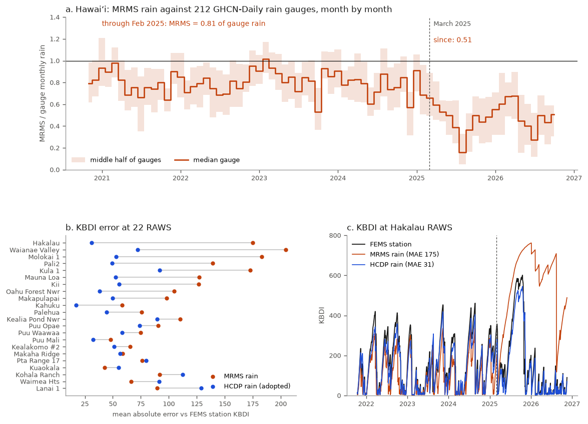
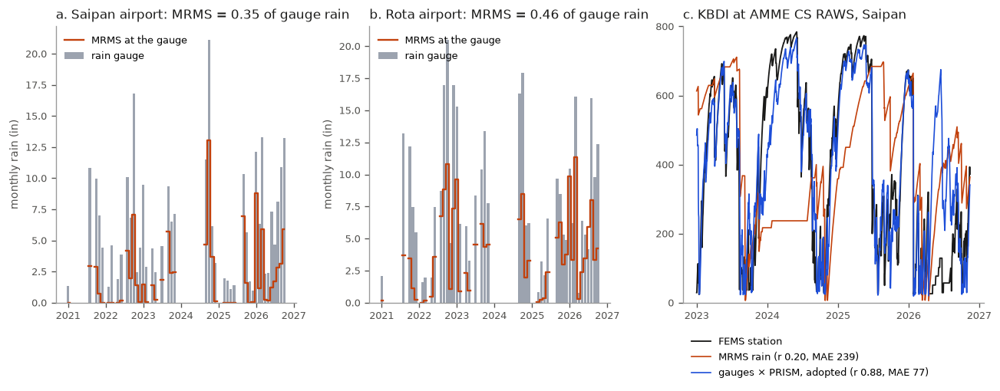

Technical description, version of 19 November 2026. Daily maps for Hawaiʻi; Guam; Saipan, Tinian and Rota (Commonwealth of the Northern Mariana Islands, CNMI); and Tutuila and Aunuʻu (American Samoa).
KBDI is a daily water balance for the upper soil and duff layer, assumed to hold 8 inches of available water at field capacity. The index Q is the depletion in hundredths of an inch: 0 is saturated, 800 is absolutely dry (Keetch and Byram 1968). Each day the index first falls by net rainfall, then rises by a drought factor that grows with temperature and with the site's mean annual rainfall:
with T the daily maximum air temperature (°F), R the mean annual rainfall (inches) and a one-day step; dQ is set to 0 when the expression is negative (cool days). The R term carries the original authors' assumption that vegetation in wetter climates transpires faster, so a site with higher annual rain dries faster between rains. That makes R a consequential choice in the islands, where it ranges from under 10 to over 300 inches across a few kilometres (§3).
Net rainfall. A rain day is one with at least 0.01 in. Within a run of consecutive rain days, the first 0.20 in (cumulative) is treated as interception and does not reduce the index; every hundredth of an inch after that lowers Q by one unit (Keetch and Byram 1968; TFS n.d.). Interpretation (TFS n.d.): 0–200, deep fuels moist and not contributing to intensity; 200–400, fuels beginning to contribute; 400–600, lower litter and duff contribute and burn actively; 600–800, severe drought with deep-burning fires. KBDI enters the National Weather Service's Red Flag criteria in both Pacific forecast offices that publish them. NWS Honolulu triggers a Red Flag event for mainly leeward areas when KBDI ≥ 500 at named stations (and/or on consultation with fire agencies), relative humidity ≤ 45% for 2 or more hours and sustained wind ≥ 26 mph for 2 or more hours, issued island by island (NWS Honolulu n.d.; earlier versions of the criteria used KBDI ≥ 600). NWS Guam uses KBDI ≥ 600 with two-minute ASOS wind ≥ 17 kt (or 20-ft wind ≥ 14 kt), minimum relative humidity below 60% and low 10-hour fuel moisture (NWS Guam n.d., 2021). No published criteria were found for American Samoa.
KBDI was formulated for the southeastern United States. Its use in the tropical Pacific follows operational practice: FEMS computes it at every Pacific RAWS from each station's catalogued mean annual precipitation (USDA Forest Service 2011, 2025). Values in high-rainfall tropical settings recover quickly after rain and climb quickly between rains, so a location is best read against its own history.
The gridded procedure is similar to the KBDI product the Texas A&M Forest Service produces daily for the State of Texas (TFS n.d.). That product runs KBDI daily on a 4 km grid from gauge-corrected NEXRAD rainfall accumulated 08:00–08:00 local time, NWS first-order maximum temperatures interpolated by inverse distance, and the PRISM 30-year mean annual precipitation; it summarizes each county's mean, minimum and maximum, flags cells above 575, and produces a forecast by holding the current day's maximum temperature with no rain. The islands keep the analysis steps, with island data substituted (Table 1); the no-rain forecast is not produced here. Each grid cell is stepped forward independently from the archive start with Q = 0; the first 365 days are treated as spin-up and are excluded from every statistic. The index on day X uses rainfall for the 24 hours that end on the morning of X and the maximum temperature of day X − 1.
| Texas (TFS) | Hawaiʻi | Guam | Saipan · Tinian · Rota | American Samoa | |
|---|---|---|---|---|---|
| Daily rain | NEXRAD, gauge bias-corrected, 4 km | HCDP daily rainfall, 250 m | MRMS multi-sensor QPE, ~500 m | Island gauges × PRISM pattern, 80 m | HCDP Samoa daily rainfall, 90 m |
| Daily Tmax | NWS stations, IDW | HCDP daily Tmax, 250 m | RTMA, 2.5 km | Saipan / Rota airport | Pago Pago airport |
| Annual rain R | PRISM 30-yr | Rainfall Atlas 1978–2007 | MRMS archive mean | PRISM 1971–2000 | HCDP 1991–2020 |
| Summary units | Counties | Four island-group zones | Island | Islands | Tutuila west/east, Aunuʻu |
| Archive start | — | 15 Oct 2020 | 15 Oct 2020 | 1 Jan 2011 | 1 Jan 2011 |
Rainfall and temperature. Daily rainfall and daily maximum temperature come from the Hawaiʻi Climate Data Portal (HCDP; Longman et al. 2024), on its statewide 250 m grid (0.00225°; 287,983 land cells; Niʻihau is outside the grid). The rainfall maps interpolate the state's gauge networks (Longman et al. 2019); the temperature maps use an elevation-based piecewise regression with a reported mean absolute error of 1.7 °C for Tmax (Kodama et al. 2024). An HCDP rain day D is the gauges' morning reading of D + 1; matching daily HCDP rain against NOAA MRMS at that one-day shift gave a correlation of 0.76 against 0.49 unshifted, so KBDI date X uses HCDP day X − 1 for both rain and Tmax.
Radar rainfall evaluated. NOAA MRMS multi-sensor radar rainfall (Zhang et al. 2016) was evaluated as the Hawaiʻi rain source and came up short, for two reasons. It under-reads the gauges: against 212 GHCN-Daily rain gauges (Menne et al. 2012) it caught 0.81 of gauge rainfall from October 2020 through February 2025, then 0.51 from March 2025 on (Fig. 1a). That drop shows in every MRMS rainfall product, radar-only included. With too little rain the index runs too dry. KBDI computed from MRMS rain (with URMA Tmax and the MRMS archive's own mean annual rain) scored a median r of 0.76 and a mean absolute error of 91 against FEMS station KBDI at 22 RAWS. HCDP scored 0.91 and 55 (Fig. 1b). Since March 2025 the MRMS index has run a median 51 points above the stations, against 8 for HCDP. The largest miss is at Hakalau: MRMS drove the index to about 750 in 2025 and kept it high after the station's index fell to near zero late that year (Fig. 1c). MRMS did slightly better at a few dry leeward stations (Lānaʻi 1, Kohala Ranch, Waimea Heights), but not enough to offset the drift.

Mean annual rain. FEMS's own station values of mean annual precipitation were traced to the 1978–2007 annual grid of the Rainfall Atlas of Hawaiʻi (Giambelluca et al. 2013): across 69 Hawaiʻi stations the median ratio of the FEMS value to the Atlas value is 1.00 (r 0.997), with 56 stations matching to 0.01 in within about 2 km of their listed coordinates. PRISM's 1971–2000 Hawaiʻi normal does not match (median ratio 0.93). FEMS documentation states only that the values were updated nationally in 2025 (USDA Forest Service 2025) and that they may come from PRISM or station records (Linn et al. 2026). Two candidate normals were compared on the same grid:
Against fire occurrence (§7), the Atlas normal ranks fire days better (AUC 0.684 vs 0.671 on satellite fire detections; 0.730 vs 0.712 on reported fire starts). At NWS Honolulu's Red Flag value of 500 it catches 40% of satellite fire days against 25% (lift 1.79 vs 1.42), and at the same share of land flagged, 31% against 25%. The map therefore uses the Atlas normal, which also keeps it consistent with the RAWS index that fire managers already see (map vs FEMS bias −4 instead of −40), at the cost of describing a wetter, earlier climate than today's.
Red Flag stations. NWS Honolulu judges KBDI at named leeward stations: Waimea Heights and/or Mana (Kauaʻi), Honolulu Airport (Oʻahu), Makapulapai (Molokaʻi), Lanai1 (Lānaʻi), Kealia Pond (Maui), and Kohala Ranch and/or Waikoloa (Hawaiʻi Island) (NWS Honolulu n.d.). All but Honolulu Airport are RAWS on this map; the Maps page lists the map and FEMS values at each against 500.
Zones are the four island groups of the Hawaiʻi zone layer (Kauaʻi, Oʻahu, Maui Nui, Hawaiʻi Island). Wildfire in Hawaiʻi is overwhelmingly human-caused and concentrated in nonnative grass and shrublands on leeward slopes (Trauernicht et al. 2015).
Rainfall is the NOAA Multi-Radar Multi-Sensor (MRMS) 24-hour multi-sensor quantitative precipitation estimate (Pass 2) for the Guam domain (Zhang et al. 2016), accumulated to 08:00 ChST, on its ~0.005° grid clipped to land; maximum temperature is the warmest of the 13:00–15:00 ChST NOAA Real-Time Mesoscale Analyses (RTMA; De Pondeca et al. 2011). R is the mean of the MRMS archive since October 2020. MRMS for Guam has about 740 days without a file since October 2020; on those days each cell follows the day-to-day change of the nearest RAWS's FEMS KBDI instead of counting the day as dry. Against the one RAWS (DANDAN) the map gives r 0.81–0.84 with a bias near +40 and a 32% false-alarm rate at 400, so it is graded moderate.
Fire-weather use. NWS Guam issues a daily fire danger rating that was based on KBDI alone (four categories, Extreme at 600–800) until November 2019 and since then has combined KBDI with wind in five tiers: Low (0–299), Moderate (300–499), High (500–800 with low wind), Very High (600–699 with strong wind) and Extreme (700–800 with strong wind) (NWS Guam 2021). Its Red Flag criteria use KBDI ≥ 600 (§1). The office's KBDI is judged from observations at its Tiyan office (PGUM) with supplementary island gauges and the DANDAN RAWS (NWS Guam 2021); this map does not include wind, so it can inform the KBDI part of the rating only.
Which islands. The CNMI State Wildland Fire Plan places all wildfire prevention and suppression on Saipan, Tinian and Rota, the only three of fourteen islands with a significant population (CNMI State Forester n.d.). Between 2016 and 2020 the islands recorded 8–41 (Saipan), 10–47 (Tinian) and 6–120 (Rota) wildfires a year, with up to 8.1% of Rota burned in one year (CNMI Forestry 2020). Sword-grass savanna on eroded soils is the main fire-prone vegetation (CNMI State Forester n.d.; Bubb and Williams 2022). The northern islands (fewer than ten residents, active volcanoes), uninhabited Aguijan and the Farallon de Medinilla bombing range are not mapped.
Radar rainfall evaluated. MRMS rainfall for the Guam radar domain was evaluated for these islands and came up short. The islands lie 80–200 km from the radar, where the beam overshoots much of the rain. At the gauges MRMS caught 0.35 of rainfall at Saipan airport and 0.46 at Rota airport, January 2021 – November 2026, and it missed whole wet-season months (Fig. 2a, b). Its own mean annual rain at the AMME CS RAWS is 20 in, against 78 in for the station. The Guam domain also has no file at all on 728 of those 2,145 days. KBDI from MRMS rain at AMME CS tracked the station poorly (r 0.20, mean absolute error 239, 2023–26). The gauge-based map described below scored r 0.88 and 77 (Fig. 2c). Open satellite estimates were reviewed but not adopted: CMORPH2 near-real-time is distributed only at 0.25°, coarser than the islands; PERSIANN-CCS and PDIR-Now are open at ~4 km but only as global daily files; IMERG requires a registered login.

Rainfall. Each island's daily rain is an index: each gauge's daily total divided by that gauge's 2011–2025 mean, averaged over the island's reporting gauges. Cell rainfall is that index times the cell's PRISM 1971–2000 annual normal on PRISM's 80 m Pacific Islands grid (PRISM Climate Group 2006; Daly et al. 2008), so each island keeps its observed day-to-day timing while wetter uplands receive proportionally more. Gauges are the GHCN-Daily records for Saipan International Airport and Capitol Hill (Saipan), Tinian, and Rota Airport (Menne et al. 2012). GHCN-Daily posts about five days late, so the latest days use the Saipan and Rota airport ASOS daily totals from the Iowa Environmental Mesonet, the same gauges reported the same day. Tinian's gauge is incomplete and the West Tinian ASOS has reported no rainfall since 2013, so Tinian takes Saipan's index when its own gauge is missing (daily r 0.51 with Tinian's gauge; totals within 5%). PRISM's normal agrees with the airport gauges (Saipan 71 vs 69 in a year, Tinian 80 vs 85, Rota 90 vs 95); Capitol Hill reads 104 against PRISM's 77, which is why each gauge is scaled by its own mean rather than by PRISM.
Temperature and R. Maximum temperature is the Saipan airport value for Saipan and Tinian and the Rota airport value for Rota (ASOS, then GHCN-Daily, then the 1991–2020 day-of-year mean for old gaps), without elevation adjustment. R is the PRISM 1971–2000 normal. Against FEMS at AMME CS for 2023–26 the map gives r 0.88, bias +2, MAE 77 and 93% of the station's days at or above 400. FEMS's KBDI at AMME CS averages about 33 in every year from 2016 to 2022 and 381–510 from 2023 while the airport gauge shows ordinary dry seasons throughout, so its earlier record is excluded from checks and gap filling. Tinian and Rota have no RAWS to check against. NWS Guam's fire danger rating and Red Flag criteria are written for Guam (NWS Guam 2021); no separate criteria for these islands were found, so 600 is shown on the Maps page only as a reference.
Rainfall is the HCDP American Samoa daily rainfall map, 90 m, covering Tutuila and Aunuʻu (16,594 land cells); Manuʻa is outside it. The one-day alignment holds here too: HCDP Samoa rain matches the Pago Pago airport gauge at r 0.95 at that shift and 0.28 unshifted. R is the HCDP Samoa 1991–2020 normal built from its monthly maps (Tutuila 146–160 in, Aunuʻu 88 in). FEMS gives both Samoa RAWS the same 223.75 in, a value that matches neither PRISM's 1971–2000 Tutuila normal nor HCDP, so it was not used.
Temperature. HCDP has no Samoa temperature maps. Maximum temperature is the Pago Pago airport GHCN-Daily value applied island-wide; for days the airport has not yet posted, the HCDP Samoa mesonet's daily maximum at two stations is reduced to airport level. An elevation-cooled field (−8.5 °C per km, fitted to the mesonet) was tested and rejected: it left the map 140 below FEMS at Toa Ridge. Recomputing FEMS's KBDI from the RAWS's own hourly observations reproduces FEMS (r 0.93 and 0.91), and swapping inputs one at a time placed the difference in temperature, not rain: RAWS daily maxima vary about twice as much as the airport's, and hot days add disproportionate drying because the drying term is exponential in T. With airport Tmax unadjusted (as in TFS's station-based temperatures), the map gives r 0.80 / bias −12 at Siufaga Ridge and r 0.65 / bias −19 at Toa Ridge (2012–26). Aunuʻu has no station; its high values come from HCDP mapping it much drier than Tutuila. No fire-weather criteria were found for the Pago Pago office, so the Maps page marks the Honolulu (500) and Guam (600) values for reference only.
Against station KBDI. Each day, the map cell containing each RAWS is compared with the KBDI that FEMS computes from that station's own observations. Scores are the Pearson correlation, mean bias, mean absolute error, the share of days in the same or an adjacent 100-unit class, and the hit and false-alarm rates at 400. FEMS station KBDI is not ground truth: it rests on a single gauge and thermometer, and its R values have their own history (§3). Agreement shows that the gridded index reproduces the operational one, not that either is right. Station-by-station results are on the Validation page.
Against fire occurrence (Hawaiʻi). KBDI on each day was sampled at 2,463 VIIRS 375 m active-fire cell-days (Schroeder et al. 2014; vegetation-fire type, nominal or high confidence, Kīlauea and Mauna Loa eruption zones removed) and at 92 reported fire starts from the FPA Fire Occurrence Database and InFORM (Short 2026), October 2021–November 2026, against 20,000 random land cells on every day. Reported starts are few because Hawaiʻi's county and state fire reports largely stop entering the database after 2020. Scores are the area under the ROC curve and, at NWS Honolulu's Red Flag value of 500 (and at 600 for comparison), the share of fire days caught against the share of land-days flagged. This tests only the KBDI part of the criteria, cell by cell, not the station-based warnings themselves.
The maps are produced once a day on a single workstation by open-source Python code: new daily inputs are fetched, every domain is re-stepped from its archive start, the RAWS checks are rerun, and this site is rebuilt and republished. A 30-day archive of maps is kept on the Maps page. The interactive map shows each grid at its own resolution over Esri basemaps (Leaflet): the grid's rows are resampled once to even steps of Web Mercator latitude so every cell sits where it belongs on the basemap, and a second, lossless image carries each cell's exact KBDI value for the hover readout. RAWS markers are coloured by FEMS's KBDI for the station on the same scale. The static research figure for each day is linked below the map. Data are retrieved from public services: HCDP (University of Hawaiʻi; API), NOAA MRMS, RTMA and GHCN-Daily (NOAA Open Data Dissemination on AWS), Iowa Environmental Mesonet ASOS daily summaries, PRISM Pacific Islands normals, the Rainfall Atlas of Hawaiʻi, and USDA Forest Service FEMS. Please cite the underlying datasets below when using these maps.